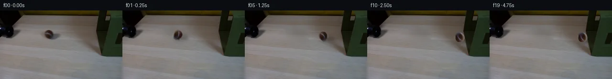

![首帧]()

Round 00
2026-11-05T07:58:35.672618+00:00像素候选变化代码 +162/−0inspection 更新
pixels 190448f2731d42a8 · code 29fdb0e7bcd984a4
查看本轮 generate.py 真实 diff
--- previous/generate.py
+++ current/generate.py
@@ -0,0 +1,162 @@
+from pathlib import Path
+
+import cv2
+import numpy as np
+from PIL import Image, ImageDraw, ImageFilter
+
+from artifact_io import save
+
+
+ROOT = Path(__file__).resolve().parent
+W, H = 256, 144
+
+
+def source_without_ball(src: np.ndarray) -> np.ndarray:
+ """Remove the one moving object from its original location.
+
+ Telea interpolation supplies the low-frequency table color. A weak,
+ feathered horizontal clone restores the photographed wood grain that an
+ inpaint alone would make too smooth.
+ """
+ mask = np.zeros((H, W), np.uint8)
+ cv2.ellipse(mask, (106, 52), (29, 17), 0, 0, 360, 255, -1)
+ filled = cv2.inpaint(src, mask, 4, cv2.INPAINT_TELEA)
+
+ # A nearby patch has the same horizontal grain. Blend it lightly only in
+ # the core of the removed region, leaving Telea's edge match intact.
+ clone = src.copy()
+ clone[35:70, 78:138] = src[35:70, 128:188]
+ core = np.zeros((H, W), np.uint8)
+ cv2.ellipse(core, (106, 52), (25, 13), 0, 0, 360, 205, -1)
+ core = cv2.GaussianBlur(core, (0, 0), 5.0).astype(np.float32) / 255.0
+ core *= 0.28
+ out = filled.astype(np.float32) * (1 - core[..., None]) + clone.astype(np.float32) * core[..., None]
+ return np.clip(out, 0, 255).astype(np.uint8)
+
+
+def extract_ball(src: Image.Image) -> Image.Image:
+ """Make a feathered RGBA sprite of the solid ball, excluding its shadow."""
+ # Crop is centered on the measured ball center (102, 51).
+ crop = np.asarray(src.crop((89, 38, 116, 65))).copy()
+ yy, xx = np.mgrid[0:27, 0:27]
+ # The source ball is slightly wider toward the bottom due to blur.
+ d = np.sqrt(((xx - 13.0) / 10.8) ** 2 + ((yy - 13.0) / 10.2) ** 2)
+ alpha = np.clip((1.10 - d) / 0.16, 0, 1)
+ # Prevent the original rightward cast shadow from entering the sprite at
+ # the lower/right feathered edge.
+ alpha *= np.where((xx > 22) & (yy > 13), 0.45, 1.0)
+ rgba = np.dstack([crop, np.rint(alpha * 255).astype(np.uint8)])
+ return Image.fromarray(rgba, "RGBA")
+
+
+def box_edge_x(y: np.ndarray) -> np.ndarray:
+ """Approximate the visible left boundary of the box near the tabletop."""
+ return 202.0 + np.clip(y - 56.0, 0, None) * 0.31
+
+
+def add_shadow(frame: Image.Image, cx: float, cy: float, contact: float) -> Image.Image:
+ """Synthesize the soft cast/contact shadow seen in the source photograph."""
+ scale = 4
+ layer = Image.new("RGBA", (W * scale, H * scale), (0, 0, 0, 0))
+ draw = ImageDraw.Draw(layer)
+ # Long soft shadow toward screen-right; it shortens slightly at the box.
+ length = 24.0 - 5.0 * contact
+ x0, y0 = (cx - 5) * scale, (cy + 1) * scale
+ x1, y1 = (cx + length) * scale, (cy + 10) * scale
+ draw.ellipse((x0, y0, x1, y1), fill=(28, 24, 19, 86))
+ # Dense contact shadow immediately below the sphere.
+ draw.ellipse(((cx - 8) * scale, (cy + 6) * scale,
+ (cx + 10) * scale, (cy + 11) * scale), fill=(31, 25, 20, 76))
+ layer = layer.filter(ImageFilter.GaussianBlur(3.2 * scale))
+ layer = layer.resize((W, H), Image.Resampling.LANCZOS)
+
+ # A cast shadow belongs on the tabletop, not across the vertical box face.
+ a = np.asarray(layer).copy()
+ yy, xx = np.mgrid[0:H, 0:W]
+ table_side = xx < box_edge_x(yy)
+ a[..., 3] = (a[..., 3].astype(np.float32) * table_side).astype(np.uint8)
+ return Image.alpha_composite(frame.convert("RGBA"), Image.fromarray(a, "RGBA"))
+
+
+def place_ball(frame: Image.Image, sprite: Image.Image, cx: float, cy: float,
+ angle: float, squeeze: float) -> Image.Image:
+ # Rotate the photographed texture inside its nearly circular silhouette.
+ ball = sprite.rotate(angle, resample=Image.Resampling.BICUBIC, expand=False)
+ if squeeze > 0:
+ sx = 1.0 - 0.13 * squeeze
+ sy = 1.0 + 0.07 * squeeze
… diff truncated; 75 more lines …